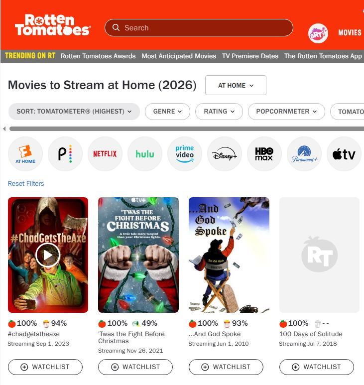
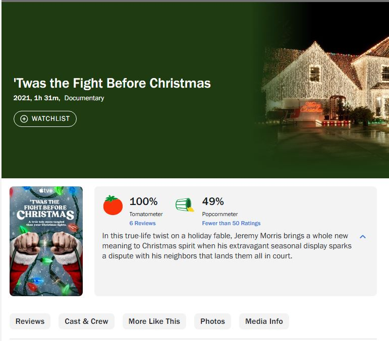
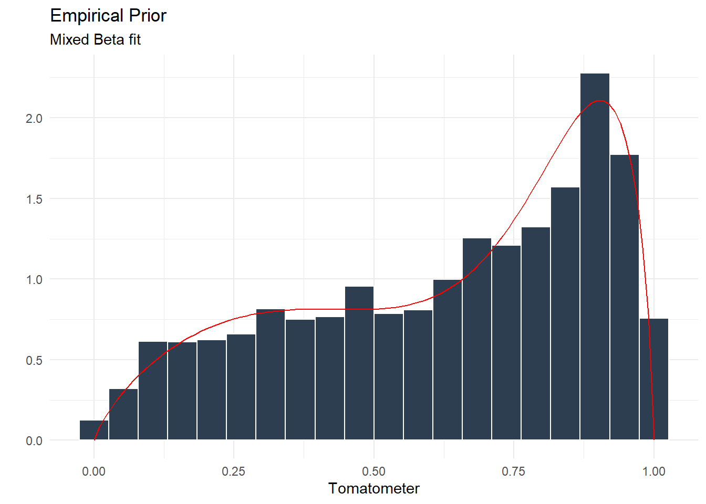
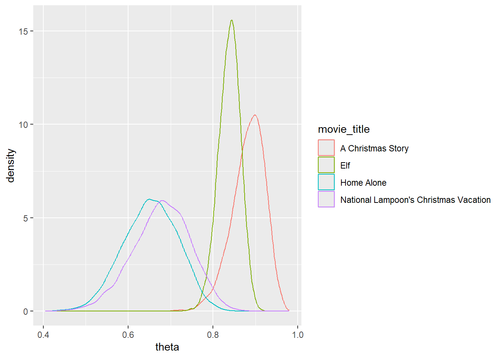

Better Movie Reviews? The problem with Rotten Tomatoes, and how to fix it.
Research Motivation & Question
Let’s find the the best movie based on tomatometer.
Lets say you want to watch a movie at home, how should you decide on what movie is best?
An idea would be checking a movie review site to see what is reviewed best. Rotten Tomatoes provides the percentage of critic and audience reviews that enjoyed a movie enough to give it a “fresh” rating. What movies have the highest tomatometer?

Hmm, I’ve never heard of these movies before. Let’s take a look at ’Twas the Fight Before Christmas. Maybe its the next Christmas Story.

Immediately we see an issue with relying solely on the tomatometer, it can be a perfect 100% if only a few critics have given favorable reviews.
How can we create a metric that lets us find and compare movies in a fair way? Empirical Bayes provides a solution!
Data Overview
The data for this analysis has been kindly scraped by Stefano Leone who has shared this data on Kaggle. It provides us with data from Rotten Tomatoes for 17,000 movies up to the end of 2020. For each movie we have the number of critics and audience who reviewed a movie and the percentage who reviewed them as fresh, exactly what we need to perform this analysis.
Constructing a Prior
Empirical Bayes approaches are very helpful for situations where the statistic of interest is a proportion and our goal is to compare the “true” proportions after adjusting for known information about movie reviews. Since we want to choose the best movie, and tomatometer is a percentage of reviews that are positive, and we have a large number of movies (17,000) this method is perfect
The first step is to take a look at the distribution of tomatometer for movies with a certain breakpoint of critic reviews.

There are very few movies with a tomatometer near zero, almost an equal amount distributed between 10% to 50%, then a large peak around 85%, tailing off near a perfect score of 100%.
We fit a distribution to this observed data to form an empirical prior, in this case a mixed beta distribution will fit nicely.

Now with this prior we can analyze our posterior estimates of tomatometer for each movie.
Posterior Analysis; How have our estimates changed?
One of the most helpful aspects of emprical bayes is how it “shrinks” estimates. This shrinking occurs strongly for movies with only a few reviews, and lightly for movies with many reviews (as the observed data dominates the information provided by the prior). Let’s see how shrinking affects the posterior estimates as the count of reviews change.
Let’s take a look at what this looks like:

The shrinking has its greatest effect on extreme values with only a few reviews.
For instance, for an observed tomatometer rating of zero having just one critic review driving that score brings the adjusted rating up to 20. This makes sense, a single negative review does not communicate much about the quality of a movie and there are not many observed zeros in movies with greater than 15 reviews in our data.
On the other hand, for a perfect observed tomatometer rating of one hundred we see that the prior adjusts the tomatometer down. Once again, since there are few observed perfect scores for movies with greater than 15 reviews the estimate is driven mainly by the prior until many reviews are recorded.
This shrinkage is a huge help for finding the most beloved movies by critics.
rotten_tomatoes_link movie_title tomatometer_rating
1 m/paddington_2 Paddington 2 100
2 m/leave_no_trace Leave No Trace 100
3 m/toy_story_2 Toy Story 2 100
4 m/man_on_wire Man on Wire 100
5 m/lady_bird Lady Bird 99
6 m/parasite_2019 Parasite (Gisaengchung) 99
7 m/selma Selma 99
8 m/eighth_grade Eighth Grade 99
9 m/shoplifters Shoplifters (Manbiki kazoku) 99
10 m/citizen_kane Citizen Kane 100
11 m/taxi_to_the_dark_side Taxi to the Dark Side 100
tomatometer_count post_mean lo_95 hi_95
1 242 0.9931872 0.9798472 0.9993218
2 234 0.9929635 0.9793147 0.9993255
3 169 0.9904041 0.9719464 0.9991691
4 158 0.9897746 0.9695561 0.9990772
5 391 0.9857381 0.9719126 0.9949652
6 451 0.9854249 0.9724647 0.9941205
7 308 0.9851597 0.9693280 0.9951650
8 305 0.9850182 0.9693296 0.9952307
9 226 0.9842393 0.9641858 0.9959374
10 93 0.9833004 0.9515961 0.9984696
11 93 0.9833004 0.9502701 0.9983799Now we see movies we expect would be at the top of critic reviews.
Comparisons
With our shrunken estimates we can also now compare movies against each other to see what the probability is that one movie is better than another according to critics. We can also compare multiple at the same time.
Let’s say we wanted to find the best comedic Christmas movie according to critics, using the posterior distribution we can find the probability that each movie is the best of the bunch by simulating.
